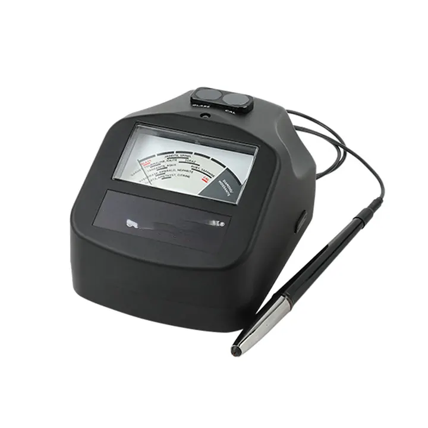

寶石鑑定流程：從肉眼到實驗室
寶石鑑定像辦案——肉眼是初步調查，儀器是科學取證，實驗室是終審判決。

核心定義
寶石鑑定的標準流程（五步）：① 肉眼觀察（顏色、光澤、整體印象）；② 常規工具（loupe 看內含物、紫外燈看螢光）；③ 物理測量（折射儀、比重、偏光）；④ 進階分析（顯微鏡、分光鏡、熱導）；⑤ 實驗室定論（光譜儀、微量元素、產地）。每一步都在「縮小嫌疑犯範圍」。
消費者的實用版：看（顏色光澤）→ 掂（比重手感）→ 照（紫外燈）→ 問（證書）——四步快篩，配合權威證書，九成風險可避。鑑定的精神：用證據排除懷疑，不靠猜測。
特徵與分類
| 步驟 | 工具 | 判斷 |
|---|---|---|
| 肉眼 | 眼睛 | 顏色光澤 |
| 常規 | loupe/紫外燈 | 內含物螢光 |
| 物理 | 折射儀/比重 | 折射率光性 |
| 進階 | 顯微鏡/光譜 | 內含物/致色 |
| 實驗室 | 光譜儀/XRF | 成分/產地 |
鑑定師的思維：「排除法」——先測折射率（家族）、再看內含物（天然/合成/產地）、後測光譜（致色/處理）——每一步排除一批可能，最後剩下的就是答案。鑑定是「科學的偵探學」。
科學原理
鑑定的邏輯：寶石的「身分」由成分與結構決定——折射率（成分結構的宏觀表現）、內含物（結晶歷史的記錄）、光譜（致色元素的指紋）——三維證據交叉，才能定論。任何單一證據都可能誤導。
實驗室的進階：UV-Vis 光譜（致色/處理）、紅外光譜（樹脂/油）、拉曼光譜（內含物鑑定）、微量元素分析（LA-ICP-MS，產地）——現代實驗室把鑑定推進到「原子級」。
鑑定與鑑別方法
- 肉眼：顏色光澤整體印象
- loupe＋紫外燈：內含物與螢光
- 折射儀＋比重：物理常數
- 顯微鏡＋光譜：深度分析
- 實驗室：最終定論
市場行情與保養建議
市場意義：鑑定流程的「深度」與「價值」匹配——低價寶石快篩即可、高價寶石必須實驗室。證書是鑑定流程的「標準化輸出」——權威機構（GIA、SSEF、Gübelin）的證書，是全球交易的信任基礎。
消費者指南：買高價寶石要求「權威證書」；看不懂鑑定沒關係，看懂「誰鑑定的」就行——實驗室的公信力，是鑑定流程的終極保障。
常見誤區
鑑定是「當下的判斷」——處理可能後天添加、證書可能過期。高價交易前重新檢測，是負責任的做法。
肉眼看「美」，儀器看「真」——合成與仿品的外觀可以騙過肉眼。鑑定是工具的科學，不是眼力的玄學。
冷知識
內含物是線索、光譜是物證、產地是背景調查——鑑定是推理與證據的科學。
常規檢測→顯微鏡→光譜——鑑定實驗室的流程，像法院的三審制。證據鏈完整，才敢下判決。
反直覺觀點
知道的越多，越明白「不確定性」——頂級實驗室常寫「高度可能」而非「確定」——科學的謙遜，是鑑定的專業。
部分寶石（改色、熱處理後）的產地證據被抹去——「不知道」也是誠實的科學結論。